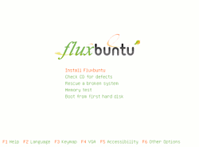
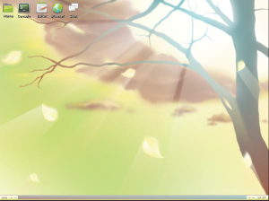
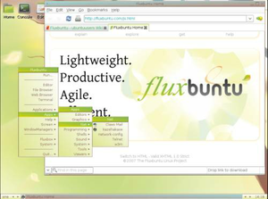
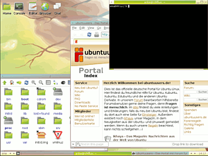

Fluxbuntu
Archivierte Anleitung
Dieser Artikel wurde archiviert, da er - oder Teile daraus - nur noch unter einer älteren Ubuntu-Version nutzbar ist. Diese Anleitung wird vom Wiki-Team weder auf Richtigkeit überprüft noch anderweitig gepflegt. Zusätzlich wurde der Artikel für weitere Änderungen gesperrt.
Anmerkung: Alternativen zu Fluxbuntu und andere Distributionen mit Fluxbox sind im Wiki-Artikel Alte Hardware aufgeführt.
Fluxbuntu  ist eine auf Ubuntu basierende Linux-Distribution mit dem Fenstermanager Fluxbox und Rox-Filer als Datei- und Desktopmanager. Es ist sehr ressourcenschonend und läuft aus diesem Grund auch noch auf alten Rechnern. Fluxbuntu basiert derzeit auf Gutsy Gibbon 7.10. Diesem Artikel liegt die Version Fluxbuntu 7.10 "Gutsy Gibbon" - Release Candidate i386 (20071026) zugrunde.
ist eine auf Ubuntu basierende Linux-Distribution mit dem Fenstermanager Fluxbox und Rox-Filer als Datei- und Desktopmanager. Es ist sehr ressourcenschonend und läuft aus diesem Grund auch noch auf alten Rechnern. Fluxbuntu basiert derzeit auf Gutsy Gibbon 7.10. Diesem Artikel liegt die Version Fluxbuntu 7.10 "Gutsy Gibbon" - Release Candidate i386 (20071026) zugrunde.
Fluxbuntu ist ein Ubuntu-Derivat und wird nicht offiziell von der Ubuntu-Community oder Canonical unterstützt. Das Fluxbox-Projekt verfolgt einige eigene Entwicklungen, die man auf der Projektseite einsehen kann. Es ist natürlich auch möglich, Fluxbox in einem Standard-Ubuntu zu installieren. Mehr zum Fenstermanager gibt es im Artikel zu Fluxbox.
Installation¶

CD-Image herunterladen¶
Für die Installation sollte von dieser Seite ein CD-Image (Größe ca. 306 MB) der CD heruntergeladen werden. Zur Zeit wird keine Live-CD, sondern nur eine Installations-CD für i386- und amd64-Systeme angeboten. Wer also Fluxbuntu zunächst testen will, muss auf Virtualisierungslösungen zurückgreifen.
Installationsvorgang¶
Nach dem Booten von CD sieht man die gewohnten Einträge der Alternate-CD und wählt "Install Fluxbuntu". Danach wird man durch den Installationsprozess geführt. Die Installation unterscheidet sich nicht von der nichtgrafischen Alternate Installation.
Nach der Installation sind 1,56 GB Festplattenspeicher belegt. Die Alternate-Installation bietet zwar an, benötigte Sprachpakete nachzuinstallieren, dies ist jedoch unvollständig, es müssen also noch bei Bedarf die gewünschten Pakete nachinstalliert werden. Weiteres dazu gibt es im Artikel Spracheinstellungen
Nutzung¶
Fluxbuntu verwendet die offiziellen Quellen von Gutsy Gibbon 7.10, aus diesen kann Software wie gewohnt über die Paketverwaltung nachinstalliert werden. Die Paketquellen sind auch bereits komplett freigeschaltet, die universe- und multiverse-Quellen, dazu die Quelltexte (diese Einträge beginnen mit "deb-src").
Fluxbuntu enthält auch die GTK-Bibliotheken, d.h. es können GTK-basierte Programme nachinstalliert werden.
Nach dem Systemstart erscheint in schlichtem Design der Displaymanager SLiM, abgekürzt für Simple Login Manager. Danach erwartet einen ein aufgeräumter Desktop mit einem unteren Panel und fünf Startern im oberen Bereich. Weitere grundlegende Informationen zum Fenstermanager Fluxbox findet man hier.
Beendet man mit Strg + Alt + ⌫ den XServer, so landet man nicht wie gewohnt beim Displaymanager sondern auf der Konsole. Hier loggt man sich ein und startet dann mit
startx
die grafische Oberfläche.
Standardprogramme¶
Folgende Software ist in der Standard-Installation enthalten:
| Programmname | Beschreibung/Funktion |
| Fluxbox | Fenstermanager |
| SLiM | Displaymanager |
| Rox-Filer | Dateimanager und Desktop-und Hintergrundbild-Zeichner |
| Claws Mail | E-Mail-Client |
| Archiv/Kazehakase | Webbrowser |
| Pidgin | Instant Messenger |
| Abiword | Textverarbeitung |
| OpenOffice Writer | Textverarbeitung |
| Gnumeric | Tabellenkalkulation (nicht im Menü enthalten) |
| Dia | Diagrammeditor |
| xpdf | PDF - Betrachter |
| VLC | Videoplayer |
| XMMS | Musikplayer |
| Imagemagick | Bildbetrachter |
| Nano | Editor |
| w3m | Webbrowser für die Konsole |
| Synaptic | Grafisches Frontend der Paketverwaltung |
| xterm | X-Terminalemulator |
| Leafpad | Editor |
| xzgv | Bildbetrachter |
Screenshots¶
 |  |
| Displaymanager | Desktop nach Systemstart |
|  |  |
| Desktop mit offenem Menü | Rox-Filer, Kazehakaze, xterm |
Links¶
Fluxbox Wiki
- Startseite des Fluxbox-Wikis http://community.fluxbuntu.org/
- The Fluxbuntu International Community Weitere Ausrichtung von Fluxbuntu
 - Ikhaya-Beitrag
- Ikhaya-Beitrag
- Erstellt mit Inyoka
-
 2004 – 2017 ubuntuusers.de • Einige Rechte vorbehalten
2004 – 2017 ubuntuusers.de • Einige Rechte vorbehalten
Lizenz • Kontakt • Datenschutz • Impressum • Serverstatus -
Serverhousing gespendet von